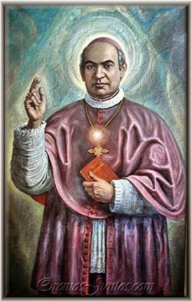
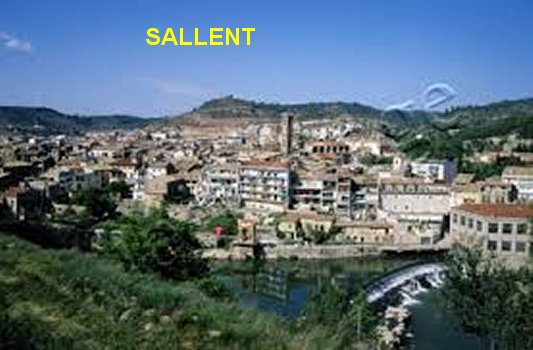

O
AMOR DOMINA SUA ALMA
JUNTO DOS PAIS
Antonio nasceu na Espanha no ano
de 1807, na pequena cidade de Sallent de Llobregat, comarca de Manresa, próximo
a Barcelona, e foi Batizado no dia de Natal na Paróquia de Santa Maria, na mesma
cidade. Seus pais
escolheram para o seu nome de Batismo “Antonio João”, mas,
posteriormente ele acrescentou o nome de MARIA, em homenagem a MÃE DE DEUS, que
sempre lhe auxiliou ao longo da sua existência e a quem amava com dedicada ternura.
Teve onze irmãos, sendo seis homens e cinco mulheres. Seus pais eram João Claret
e Joséfa Clara, muitos devotos do SANTÍSSIMO SACRAMENTO e de NOSSA SENHORA.
Desde criança, era um
menino tranquilo e de bom coração, sempre ajudando a quem necessitava de um
pequeno serviço, assim como tinha um profundo respeito as pessoas idosas.
Estava com seis anos
de idade quando foi matriculado numa Escola, em que o primeiro
professor era o senhor Pascoal, homem inteligente, dedicado ao magistério e
muito religioso. Mesmo após o horário escolar, aos meninos que se interessassem,
ele ensinava religião. E um dos primeiros a se apresentar para as aulas
extraordinárias era Antonio.
Na família, os pais
procuraram educar os filhos com respeito e amizade, ensinando-lhes os bons
costumes e os fundamentos da religião. Geralmente após o almoço, por volta das
12 horas e 15 minutos, o pai mandava Antonio fazer uma leitura espiritual, sobre
a vida de algum Santo ou um texto sobre assuntos religiosos. Este fato despertou
no menino um amor tão apaixonado a JESUS, que o fazia beijar o crucifixo em
todas oportunidades.
O senhor João Claret era
proprietário de uma fábrica de fiação e de tecidos, e o colocou lá para aprender
e trabalhar. Antonio gostou muito, e aprendeu o ofício com interesse e
sabedoria, tendo passado em todas as seções da fábrica, o que lhe deu grande
experiência em todos os segmentos da tecelagem e da produção. Os aplicou no
serviço com inteligência e dedicação, pois não queria decepcionar os seus pais,
a quem amava com muita dedicação e respeito.
MENINO RELIGIOSO
Desde tenra
idade revelou uma grande inclinação para a religião e a piedade. Aos domingos e
dias Santos, nunca faltava a Santa Missa, e nos dias da semana, frequentava a
Igreja quando podia, mas na verdade, sempre dava um jeitinho para estar presente
e assistir a Santa Missa.
Fez a Primeira
Comunhão aos 10 anos de idade, e depois, nunca mais se afastou do Sacramento da
Eucaristia e do Sacramento da Confissão. Nas orações, habitualmente Antonio se
oferecia a DEUS para os serviços no Altar, revelando com frequência o seu
desejo de ser Sacerdote. Por isso mesmo, logo que terminou o Curso Primário, o
Padre João Riera começou a lhe dar aulas de latim.
Nesta mesma época sua
devoção a NOSSA SENHORA foi despertada, e também cresceu jubilosa e apaixonada
em seu coração, enchendo de ternura a sua vida. Tendo ganhado de presente um
Terço, logo aprendeu a recitá-lo, e todos os dias, o rezava em honra a MÃE DE
DEUS.
NA INDÚSTRIA TÊXTIL
Naquela época um bom empregado
não era fácil encontrar. Por isso mesmo, embora fosse jovem, o seu pai o
contratou definitivamente para trabalhar na Fabrica de Tecidos, aproveitando os
seus avançados conhecimentos a fim de ajudar na produção. O pai via as
excepcionais qualidades do filho e quis aproveitar para fazê-las crescer ainda
mais. A verdade é que a fama de artesão do filho cresceu bastante e chegou a
Barcelona. Amigos do seu pai queriam levá-lo para lá, prevendo que o rapaz
tinha condições de fazer fortuna.
Antonio não estava
estimulado a ir, porque interiormente tinha a convicção de que DEUS queria que
ele fosse um Sacerdote e não um artesão.
Mas no momento,
ajudando o seu pai na Fábrica, ele sentiu que era o seu dever e obrigação se
desenvolver na especialidade, se aperfeiçoando nas artes têxteis. E por essa
razão, pediu ao seu pai permissão para estudar em Barcelona. E o seu pai não só
permitiu como o levou. E lá ele se dedicou com disposição e interesse, inclusive
conseguindo estudar desenho na
“Casa Lonja” que era uma notável especialista
na arte.
CHAMAMENTO A CONVERSÃO
 E assim, entusiasmado e
envolvido pelos estudos e trabalho, percebeu que aquele fervor pelas orações
havia se amainado, pois na sua cabeça as orações se misturavam e ferviam com as
idéias de novos projetos têxteis, utilizando outros métodos mais eficientes e
adequados. E certo dia, no meio de um turbilhão de idéias que lhe varria o
raciocínio, em plena Santa Missa, veio a sua mente as palavras do Evangelho:
“Que aproveita ao homem
ganhar o mundo inteiro, se ele perder a sua alma”? (Lc 9, 25). A frase lhe causou uma impressão tão forte, como se uma
robusta flecha lançada com toda a força, atravessasse a sua alma. E a partir
daquele momento, como se estivesse assustado por reconhecer que tinha se
afastado do seu rumo idealizado, passou a pensar no que devia fazer.
E assim, entusiasmado e
envolvido pelos estudos e trabalho, percebeu que aquele fervor pelas orações
havia se amainado, pois na sua cabeça as orações se misturavam e ferviam com as
idéias de novos projetos têxteis, utilizando outros métodos mais eficientes e
adequados. E certo dia, no meio de um turbilhão de idéias que lhe varria o
raciocínio, em plena Santa Missa, veio a sua mente as palavras do Evangelho:
“Que aproveita ao homem
ganhar o mundo inteiro, se ele perder a sua alma”? (Lc 9, 25). A frase lhe causou uma impressão tão forte, como se uma
robusta flecha lançada com toda a força, atravessasse a sua alma. E a partir
daquele momento, como se estivesse assustado por reconhecer que tinha se
afastado do seu rumo idealizado, passou a pensar no que devia fazer.
Visitou o Oratório de
São Felipe Neri e lá foi apresentado ao Padre Pablo Amigó, que o escutou e
louvou a sua atitude, pela resolução tomada. Aconselhou-o a recomeçar o estudo
do Latim. E ele seguiu o conselho do Padre.
PROTEÇÃO DIVINA
Então, Antonio começou a pensar
na realidade da sua vida e a rezar mais, o que o ajudou a retomar aqueles primeiros
fervores da sua existência. Seus olhos se abriram e vieram a sua lembrança
perigos que enfrentou, dos quais foi salvo milagrosamente. E por isso mesmo,
como reconhecimento e gratidão a DEUS NOSSO SENHOR, com simplicidade quis
relembrá-los:
“No verão
passado, na cidade de Barcelona, NOSSA SENHORA o livrou de morrer afogado. Por
causa do trabalho intenso e o grande calor reinante, sempre que podia, buscava
alívio na orla marítima. Certo dia, ele foi a um local chamado “Mar Velho”,
e para refrescar os pés e o calor do corpo entrou um pouco no mar. Veio uma onda
alta e logo seguida por outra, e depois outra, que o envolveu de tal forma, com
um terrível movimento de afogá-lo. Todavia, invocando seguidamente a SANTÍSSIMA
VIRGEM MARIA, surpreendentemente ele começou a flutuar sobre as ondas... E logo
na sequência, as ondas foram se deslocando e o lançaram nas areias da praia.
Ainda deitado e muito assustado, levantou o olhar para o mar e se arrepiou de
medo, muito trêmulo e nervoso pode perceber o iminente perigo que passou e que
foi salvo, graças a bondade infinita da RAINHA DO CÉU”!
“Em outra ocasião,
ainda em Barcelona, travou amizade com um rapaz que se revelara seu companheiro
e amigo, e juntos fizeram uma sociedade lotérica. Na época apertada dos estudos
e do aprendizado têxtil, a despesa era grande, e ele, naturalmente muito
responsável, buscava com suas transações custear os seus estudos, sem
sobrecarregar os seus pais. E o negócio da lotérica prosperou, pois
frequentemente acertavam os números sorteados e ganhavam um bom dinheiro.
Acontece que o companheiro era viciado no jogo de cartas, o que ganhava na
sociedade que fundaram, gastava no jogo. E desse modo gastou tudo o que ele
possuía. E certo dia, entrou no quarto onde Antonio morava, abriu o cofre e
roubou tudo o que havia, e depois, perdeu tudo na mesa de jogo. E mais, pegou os
livros do Antonio, roupas e pertences pessoais e empenhou, para liquidar dívidas
de jogo. E por último chegou ao cúmulo de entrar na casa de uma senhora rica,
roubar várias jóias e vende-las, e também, colocou o dinheiro no jogo e
perdeu tudo. Acontece que a senhora descobriu o roubo e deu queixa a polícia,
que foi atrás do bandido e o prendeu. O rapaz acabou confessando todos os delitos
e pegou dois anos de prisão.
têxtil, a despesa era grande, e ele, naturalmente muito
responsável, buscava com suas transações custear os seus estudos, sem
sobrecarregar os seus pais. E o negócio da lotérica prosperou, pois
frequentemente acertavam os números sorteados e ganhavam um bom dinheiro.
Acontece que o companheiro era viciado no jogo de cartas, o que ganhava na
sociedade que fundaram, gastava no jogo. E desse modo gastou tudo o que ele
possuía. E certo dia, entrou no quarto onde Antonio morava, abriu o cofre e
roubou tudo o que havia, e depois, perdeu tudo na mesa de jogo. E mais, pegou os
livros do Antonio, roupas e pertences pessoais e empenhou, para liquidar dívidas
de jogo. E por último chegou ao cúmulo de entrar na casa de uma senhora rica,
roubar várias jóias e vende-las, e também, colocou o dinheiro no jogo e
perdeu tudo. Acontece que a senhora descobriu o roubo e deu queixa a polícia,
que foi atrás do bandido e o prendeu. O rapaz acabou confessando todos os delitos
e pegou dois anos de prisão.
Impossível
explicar o choque e as preocupações que tudo isto causou ao Antonio,
sobretudo o abominável perigo de também ser envolvido nos crimes, pois era sócio
do ladrão, e assim, ficou sujeito inclusive a perder a sua dignidade e a honra.
A confusão na sua cabeça e a vergonha eram tantas que ele nem tinha coragem de
aparecer na rua... Tinha a impressão de que todos olhavam para ele”!
E Antonio rezou muito
e implorou a inspiração e proteção de NOSSO SENHOR e da VIRGEM MARIA, para não
ser atingido por tantas transgressões e infâmias. Decepcionado e muito
aborrecido, decidiu que o melhor era abandonar o mundo e se isolar na solidão,
entrando na Cartuxa (Ordem Religiosa fundada por São Bruno). Ele retornou aos
estudos e na primeira oportunidade, aproveitando a ida de seu pai a Barcelona,
descreveu-lhe todos os acontecimentos, inclusive a sua decisão de deixar a
Fábrica e entrar num Mosteiro.
DECIDIU PELO IDEAL
RELIGIOSO
Dedicou-se aos estudos em
Barcelona, principalmente a gramática latina, tendo por professores e
orientadores, pessoas com capacidade e apurado espírito cristão, como o Padre
Tomás e o Padre Francisco Artigas. E lá permaneceu até ir para Vic, a fim de
iniciar o estudo da filosofia.
Deixou Barcelona
depois de quatro anos, no início de Setembro de 1829. Chegando a Vic, no dia
seguinte foi visitar o senhor Bispo, Dom Paulo de Jesus Corcuera que o recebeu
com bastante atenção. Ficou hospedado no mesmo quarto junto com o Padre
Fortunato Brés, sacerdote competente e com quem cultivou excelente amizade.
Naquele ambiente
tranquilo e acolhedor, Antonio pode reconstruir a sua vida espiritual, que
andava meio desleixada, assim como, se dedicar seriamente aos estudos.
Logo nos primeiros
dias, desejando fazer uma Confissão geral, a seu pedido, indicaram-lhe um Padre
da Ordem de São Felipe Neri: Padre Pedro Bach, que se tornou o seu confessor e
diretor espiritual, em todas as ocasiões.
Na continuidade, para
atender as suas necessidades, ele criou um calendário espiritual, que cumpriu
perseverantemente todos os dias: a) Participava diariamente da Santa Missa
celebrada pelo Padre Fortunato; b) Fazia meia hora de visitação ao SANTÍSSIMO
SACRAMENTO; c) E rezava diante da imagem de NOSSA SENHORA DO ROSÁRIO, na Igreja
dos Dominicanos.
Esta conduta fez
renascer nele o antigo fervor religioso, sem que descuidasse dos estudos e das
obrigações do quotidiano. E também, por uma sequência de acontecimentos, foi aos
poucos, esfriando no seu coração, o desejo de se isolar do mundo, entrando na
Ordem Cartuxa.
Continuando os estudos
em Vic, no dia 20 de Dezembro de 1834, recebeu o Diaconato.
ORDENADO SACERDOTE
No dia 13 de Junho de 1835 (dia
de Santo Antonio) foi ordenado presbítero, não pelo senhor Bispo de Vic que
estava adoentado e veio a falecer no dia 5 de Julho, mas pelo Bispo de Solsona.
E antes da ordenação sacerdotal, ele fez 40 dias de Exercícios Espirituais,
prescritos pela Ordem Religiosa.
Padre Antonio Maria
Claret celebrou a sua primeira Santa Missa no dia 21 de Junho, festa de São Luíz
Gonzaga, padroeiro da Congregação de São Felipe Neri.
A seguir celebrou a
Santa Missa na sua terra natal, para os seus familiares, parentes e todo o povo,
e no dia 2 de Agosto, começou a ouvir confissões.
Terminado os trabalhos
em Sallent, ele teria que retornar a Vic para continuar os estudos e receber o
“Certificado de Sacerdote”
. Todavia, em face de ter iniciado a guerra
civil espanhola, o senhor Vigário Capitular achou mais conveniente que ele continuasse
os estudos em Sallent, do mesmo modo como faria se estivesse em Vic, e como não havia
outro sacerdote disponível para ajudar o Pároco da cidade de Sallent, foi conferido ao Padre
Antonio a nomeação de Coadjutor Paroquial até ele terminar os estudos, e nesta
mesma época, no dia 27 de Agosto de 1839, o senhor Vigário lhe entregou o
“Certificado de
Sacerdote”.
PADRE EM SUA TERRA NATAL

Assim, Padre Antonio
passou a morar na Residência da Paróquia de Santa Maria de Sallent, ocupando-se
dos ministérios eclesiásticos e dos seus estudos pessoais. Repartia com o Pároco
todos os trabalhos pastorais, alternando com ele nas pregações e celebrações
Eucarísticas.
Depois de dois anos de
laborioso trabalho, o Pároco teve de renunciar por motivos políticos,
e Antonio ficou sozinho, assumindo todo o trabalho Paroquial, em Outubro de
1839.
Chamou a sua irmã
Maria para vir ajudá-lo, na secretaria, na cozinha e arrumação da Casa
Paroquial, enquanto ele realizava todo atendimento paroquial: celebrava a Santa
Missa logo cedo; depois permanecia no Confessionário a disposição dos fiéis.
Após o café da manhã saia para atender os doentes, ministrar a unção aos
necessitados, aos quais acompanhava todos os dias. Mas não entrava nas casas
para fazer visitas sociais a amigos e parentes, embora tivesse muitos naquela região.
Atendia sim, o povo simples do campo, das lavouras e os doentes.
Padre Antonio gostava
de ler, e com frequência lia a Vida dos Santos e principalmente a Bíblia Sagrada.
Há muitas passagens nas Sagradas Escrituras que o impressionavam vivamente, e que
inclusive, ele chegava a dizer que era como se estivesse ouvindo a Voz de DEUS:
“Ficarão
envergonhados e desapontados todos os que têm raiva de ti. Reduzir-se-ão a nada
e perecerão os que quiserem lutar contra ti ... Com efeito, EU, o SENHOR, teu
DEUS, te tomarei pela mão e te direi: Não temas, Sou EU que te ajudo”.
(Is 41, 11;13)
Esta outra passagem de
Isaías o fazia chorar:
“... Tu a quem estendi a mão desde os confins da Terra, a quem chamei desde os
recantos mais remotos e TE disse: Tu és o MEU servo, EU te escolhi e não te
deixei”. (Is 41, 9)
Estas palavras do
SENHOR lhe estimulava a caprichar mais nas homilias e lhe produzia muito mais
ânimo nas pregações durante a Santa Missa.
QUERIA SER MISSIONÁRIO
Mas Antonio tinha um ideal bem
antigo: queria ser “missionário”.
Ele tinha uma séria preocupação de santificar
a sua existência, mas também, buscava meios de ajudar ao próximo e de conseguir
a salvação das pessoas. Todavia, pretendendo exercitar a vida missionária teve de
superar muitas dificuldades antes de deixar a Paróquia na sua terra natal, tanto
por parte do senhor Bispo, como do povo. Viajou para Barcelona para preparar o
passaporte. Não teve êxito. Conforme a recomendação de amigos, ele só conseguiria
regularizar os seus documentos e tirar o passaporte, na França. Então, decididamente
para a França ele foi, viajando de barco e a pé, com todas as dificuldades que
surgem durante um trajeto tão longo, enfrentou todos os caminhos com decisão
e coragem. Depois de passar por varias cidades, chegou a Prades, na França,
onde foi muito bem recebido e conseguiu trocar o seu passaporte por um que
o levaria a Roma.

PRÓXIMA PÁGINA
PÁGINA ANTERIOR
RETORNA AO ÍNDICE